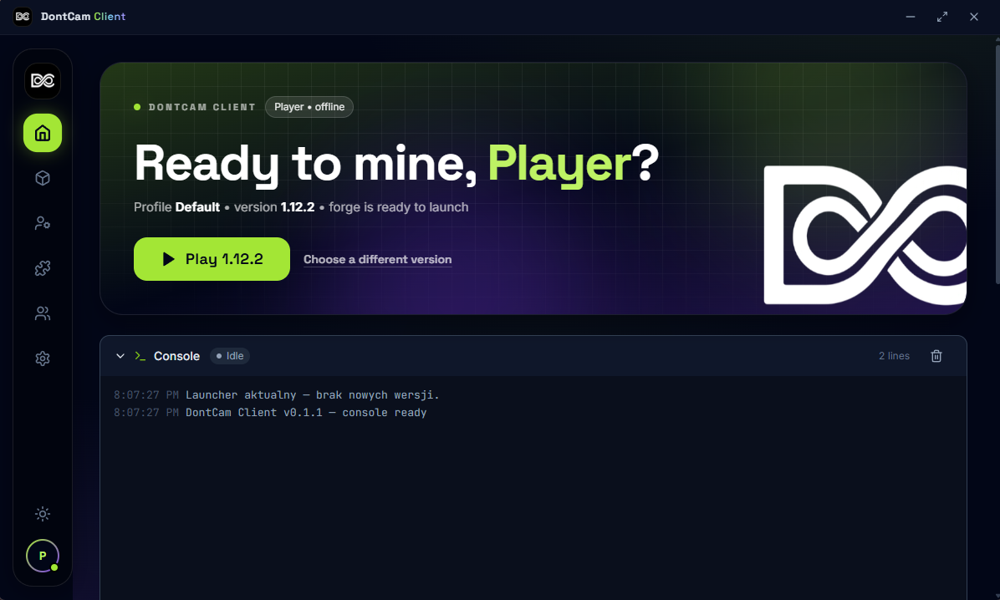

Accounts
Offline with correct UUID v3 + Microsoft OAuth2 (Xbox → XSTS, ownership check, auto-refresh).
DontCam Client is a fast Tauri 2 launcher: offline & Microsoft accounts, versions 1.8.9 – 1.12 with Forge and 1.16 – 1.21 with Fabric, profiles, mods and game start in seconds.
Click an icon — see the screen

Features
Offline with correct UUID v3 + Microsoft OAuth2 (Xbox → XSTS, ownership check, auto-refresh).
Minecraft 1.8.9 – 1.21 fully SHA1-verified. No snapshots or alphas.
Forge for 1.8.9 – 1.12 and Fabric for 1.16 – 1.21. One-click install.
Auto-picked Java 8 / 17 / 21 plus profiles with own folders, memory and resolution.
Supported versions
Yes, 100% and ad-free. Offline mode works without a Microsoft account, and an account owning Minecraft unlocks premium servers.
1.8.9 / 1.12.2 → Java 8 • 1.20.1 → Java 17 • 1.21 → Java 21
The launcher detects and picks Java automatically, or you can point to your own in Settings.
9 times out of 10 it's the wrong Java version (see above). Then check: RAM amount in the profile, the launcher console log after launch, and whether the version finished downloading.
%APPDATA%/DontCam Client/instances/<profil>/{mods, resourcepacks, saves}
Yes: Forge for versions 1.8.9 – 1.12 and Fabric for 1.16 – 1.21. One-click install (first Forge install takes a few minutes).
Windows 10/11 • 64-bit
Installer not published yet.
📵 The launcher isn't available on phones — grab it on a Windows PC.